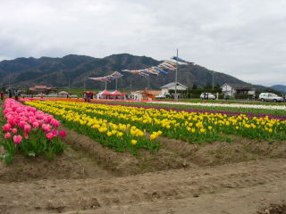
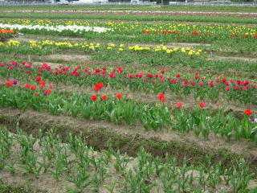

斐川町のチューリップ祭
島根県出雲市斐川町今在家 （会場は変わるようです。）
2010/4/10 斐川のチューリップが沢山咲いてます。
お祭は4/17・18ですが、開催期間は10日（土）～21日（水）と長いです。
今日は初日ですが、沢山咲いてました。

綺麗です。お店も少しですが出ていました。
お祭当日は沢山の屋台が出たり人も凄く多いですが、今日は空いてて、のんびり花見ができました。
近くの今在家農村公園の駐車場に車が駐車できて快適でした。
ちょっと変わった八重のチューリップもありました。
ボタンみたいで派手ですね。
色んな色や形のチューリップがあるので、自分が一番好きな花を探しながら歩きました。
好きなのを選んで買えるんですが、今回は買いませんでした。

まだ咲いていない所もありますので、長く鑑賞できそうです。
以前はヒヤシンスも咲いていましたが、今回はありませんでした。
斐川町と出雲市の合併がどうのこうのって言ってる車がうろうろ走ってて、ちょっとうるさかったのが残念でした。
「第21回斐川チューリップ祭 花のまちから斐川町の春一番チューリップを今在家から 80何本のチューリップと100ｍに泳ぐ鯉のぼりがお出迎え」だそうです。
斐川町のチューリップ祭。
今在家農村公園西側の畑に、チューリップとヒヤシンスが計80万本植わっています。いろんな色の花が沢山咲いてますので見ごたえがあります。
チューリップとヒヤシンスでは花が咲く時期がちょっと違いますし、チューリップの種類によっても開花時期が違いますので、いろんな色の花が一斉に咲き乱れるって事はないんですが、そのぶん花見が出来る期間が長いです。
近くにお住いの方は、1シーズンに複数回行かれるといいと思います。
お祭り当日は屋台が沢山出てますし、観光バスも来ますのでとてもにぎわいます。
でも駐車場があまり多くないので、お祭り当日は道路がとても混雑します。のんびり見たい方はお祭りの日を避けたほうがいいと思います。